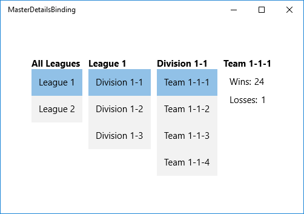

Bind hierarchical data and create a master/details view with Windows App SDK
Note
Also see the Master/detail UWP sample.
You can make a multi-level master/details (also known as list-details) view of hierarchical data by binding items controls to CollectionViewSource instances that are bound together in a chain. In this topic we use the {x:Bind} markup extension where possible, and the more flexible (but less performant) {Binding} markup extension where necessary.
One common structure for Windows App SDK apps is to navigate to different details pages when a user makes a selection in a master list. This is useful when you want to provide a rich visual representation of each item at every level in a hierarchy. Another option is to display multiple levels of data on a single page. This is useful when you want to display a few simple lists that let the user quickly drill down to an item of interest. This topic describes how to implement this interaction. The CollectionViewSource instances keep track of the current selection at each hierarchical level.
We'll create a view of a sports team hierarchy that is organized into lists for leagues, divisions, and teams, and includes a team details view. When you select an item from any list, the subsequent views update automatically.

Prerequisites
This topic assumes that you know how to create a basic Windows App SDK app. For instructions on creating your first Windows App SDK app, see Create your first WinUI 3 (Windows App SDK) project.
Create the project
Create a new Blank App, Packaged (WinUI 3 in Desktop) project. Name it "MasterDetailsBinding".
Create the data model
Add a new class to your project, name it ViewModel.cs, and add this code to it. This will be your binding source class.
using System.Collections.Generic;
using System.Linq;
namespace MasterDetailsBinding
{
public class Team
{
public string Name { get; set; }
public int Wins { get; set; }
public int Losses { get; set; }
}
public class Division
{
public string Name { get; set; }
public IEnumerable<Team> Teams { get; set; }
}
public class League
{
public string Name { get; set; }
public IEnumerable<Division> Divisions { get; set; }
}
public class LeagueList : List<League>
{
public LeagueList()
{
AddRange(GetLeague().ToList());
}
public IEnumerable<League> GetLeague()
{
return from x in Enumerable.Range(1, 2)
select new League
{
Name = "League " + x,
Divisions = GetDivisions(x).ToList()
};
}
public IEnumerable<Division> GetDivisions(int x)
{
return from y in Enumerable.Range(1, 3)
select new Division
{
Name = string.Format("Division {0}-{1}", x, y),
Teams = GetTeams(x, y).ToList()
};
}
public IEnumerable<Team> GetTeams(int x, int y)
{
return from z in Enumerable.Range(1, 4)
select new Team
{
Name = string.Format("Team {0}-{1}-{2}", x, y, z),
Wins = 25 - (x * y * z),
Losses = x * y * z
};
}
}
}
Create the view
Next, expose the binding source class from the class that represents your page of markup. We do that by adding a property of type LeagueList to MainWindow.
namespace MasterDetailsBinding
{
public sealed partial class MainWindow : Window
{
public MainWindow()
{
InitializeComponent();
ViewModel = new LeagueList();
}
public LeagueList ViewModel { get; set; }
}
}
Finally, replace the contents of the MainWindow.xaml file with the following markup, which declares three CollectionViewSource instances and binds them together in a chain. The subsequent controls can then bind to the appropriate CollectionViewSource, depending on its level in the hierarchy.
<Window
x:Class="MasterDetailsBinding.MainWindow"
xmlns="http://schemas.microsoft.com/winfx/2006/xaml/presentation"
xmlns:x="http://schemas.microsoft.com/winfx/2006/xaml"
xmlns:local="using:MasterDetailsBinding"
xmlns:d="http://schemas.microsoft.com/expression/blend/2008"
xmlns:mc="http://schemas.openxmlformats.org/markup-compatibility/2006"
mc:Ignorable="d">
<Grid>
<Grid.Resources>
<CollectionViewSource x:Name="Leagues"
Source="{x:Bind ViewModel}"/>
<CollectionViewSource x:Name="Divisions"
Source="{Binding Divisions, Source={StaticResource Leagues}}"/>
<CollectionViewSource x:Name="Teams"
Source="{Binding Teams, Source={StaticResource Divisions}}"/>
<Style TargetType="TextBlock">
<Setter Property="FontSize" Value="15"/>
<Setter Property="FontWeight" Value="Bold"/>
</Style>
<Style TargetType="ListBox">
<Setter Property="FontSize" Value="15"/>
</Style>
<Style TargetType="ContentControl">
<Setter Property="FontSize" Value="15"/>
</Style>
</Grid.Resources>
<StackPanel Orientation="Horizontal">
<!-- All Leagues view -->
<StackPanel Margin="5">
<TextBlock Text="All Leagues"/>
<ListBox ItemsSource="{Binding Source={StaticResource Leagues}}"
DisplayMemberPath="Name"/>
</StackPanel>
<!-- League/Divisions view -->
<StackPanel Margin="5">
<TextBlock Text="{Binding Name, Source={StaticResource Leagues}}"/>
<ListBox ItemsSource="{Binding Source={StaticResource Divisions}}"
DisplayMemberPath="Name"/>
</StackPanel>
<!-- Division/Teams view -->
<StackPanel Margin="5">
<TextBlock Text="{Binding Name, Source={StaticResource Divisions}}"/>
<ListBox ItemsSource="{Binding Source={StaticResource Teams}}"
DisplayMemberPath="Name"/>
</StackPanel>
<!-- Team view -->
<ContentControl Content="{Binding Source={StaticResource Teams}}">
<ContentControl.ContentTemplate>
<DataTemplate>
<StackPanel Margin="5">
<TextBlock Text="{Binding Name}"
FontSize="15" FontWeight="Bold"/>
<StackPanel Orientation="Horizontal" Margin="10,10">
<TextBlock Text="Wins:" Margin="0,0,5,0"/>
<TextBlock Text="{Binding Wins}"/>
</StackPanel>
<StackPanel Orientation="Horizontal" Margin="10,0">
<TextBlock Text="Losses:" Margin="0,0,5,0"/>
<TextBlock Text="{Binding Losses}"/>
</StackPanel>
</StackPanel>
</DataTemplate>
</ContentControl.ContentTemplate>
</ContentControl>
</StackPanel>
</Grid>
</Window>
Note that by binding directly to the CollectionViewSource, you're implying that you want to bind to the current item in bindings where the path cannot be found on the collection itself. There's no need to specify the CurrentItem property as the path for the binding, although you can do that if there's any ambiguity. For example, the ContentControl representing the team view has its Content property bound to the Teams CollectionViewSource. However, the controls in the DataTemplate bind to properties of the Team class because the CollectionViewSource automatically supplies the currently selected team from the teams list when necessary.